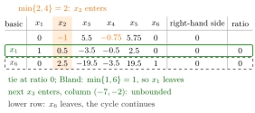

Bland's Rule¶
Method¶
Bland's rule changes two steps of the simplex algorithm, both in its tableau version and in the revised simplex algorithm; all other steps stay as they are. Below, is the index set of the nonbasic variables, the reduced cost of , and and are the entries in row of the right-hand side and of the column of the entering variable in the current tableau.
- Entering variable. Among the nonbasic variables with a negative reduced cost, choose the one with the smallest index: , instead of the one with the most negative reduced cost.
- Leaving variable. Among the basic variables that restrict the increase of the most, that is, those attaining the minimum ratio over the rows with , choose the one with the smallest index, instead of an arbitrary one.
The indices are those of the variables, for the structural and for the slack variables, not the row numbers of the tableau.
Theorem (Bland). With Bland's rule, the (revised) simplex algorithm cannot cycle. Since a linear program in equation form has finitely many bases and none is visited twice, the algorithm stops after finitely many iterations, with an optimal solution or with the conclusion that the linear program is infeasible or unbounded.
Interpretation¶
Bland's rule replaces the greedy choice by a fixed priority list: among the eligible variables, always take the first one. It trades speed for a guarantee: no basis is visited twice, so the algorithm cannot cycle.

The figure is step (b) of Example 1 below. Two reduced costs are negative, for and for ; the smaller index makes enter (the most negative reduced cost would choose it too). Both rows give the ratio , a tie between the basic variables and . Bland's rule takes the smaller index and lets leave; in the next tableau enters with column , which shows that the linear program is unbounded. Breaking the tie towards the lower row lets leave instead and continues a cycle that returns to the starting tableau after six exchanges.
The proof argues by contradiction. In a cycle every step is degenerate, so all bases share one basic solution. Call a variable fickle if it is basic in some but not all bases of the cycle, and let be the largest fickle index. Somewhere leaves while some enters, and later enters again. The reduced costs , at these two moments and the direction of the first exchange satisfy , yet the smallest-index choices make every nonzero term of this sum negative. Both parts of the rule enter the proof: the entering part controls the reduced costs, the leaving part the direction.
The rule does not avoid degenerate steps; Example 1 below makes two of them. What it prevents is returning to an earlier basis. Bland's rule usually needs more iterations, because it ignores how much a variable improves (Example 2 below). In practice one therefore keeps the most negative reduced cost, as in the OR Modelling entering variable rule, and switch to Bland's rule when cycling is observed or suspected.
A common slip is to break ratio-test ties by row position instead of variable index. The guarantee also serves theory: it is used to show that every linear program is infeasible, unbounded or has an optimal solution, and to give a short proof of strong duality.
Key Results¶
- Bland's rule: the entering variable is the nonbasic variable with the smallest index among those with ; the leaving variable is the one with the smallest index among those attaining the minimum ratio.
- With Bland's rule the (revised) simplex algorithm cannot cycle.
- With Bland's rule the algorithm stops after finitely many iterations, since there are at most bases and none repeats.
- With Bland's rule the algorithm never gets stuck at a degenerate corner point: after finitely many basis changes it moves to a better corner point or stops; a stop because no reduced cost is negative is at an optimal solution by the nonoptimality theorem for reduced costs.
- Started at a basis of a feasible corner point, the algorithm with Bland's rule ends with an optimal solution or shows unboundedness; hence a feasible linear program with bounded objective has an optimal solution.
Examples¶
1. Leaving a cycle. Maximize subject to , and , with slacks . With the most negative reduced cost entering and ties broken towards the lower row, the simplex algorithm cycles on this linear program through six bases back to the start (see cycling). Start from the slack basis, with basic variables and reduced costs .
(a) The negative reduced costs belong to and ; the smallest index is , so enters. Only the row has a positive entry, , so leaves. This is the same step as in the cycling run, with objective row and rows and , all right-hand sides .
(b) The negative reduced costs belong to and , so enters. Both rows give the ratio ; the candidates are and , and Bland's rule lets leave, whereas the cycling run lets leave. Pivoting on the entry gives
(c) The negative reduced costs belong to and , so enters. Its column has no positive entry, so no basic variable can leave and the linear program is unbounded: raising to raises to and to , and to .
(d) For example, a feasible point with comes from : . Check: , , and .
Steps (a) and (b) are degenerate, stays ; Bland's rule leaves the corner by a different exchange, not by avoiding degenerate steps.
2. Slower than the greedy rule. For subject to , , , (slacks ), Bland's rule first lets enter, because , although is more negative than . It visits , , and with : three iterations, with , and then the slack entering. The most negative reduced cost reaches in two iterations, via .
3. Index, not row. In step (b) of Example 1 the tied candidates are in the first row and in the second. The rule compares the indices , not the row numbers. Had stood in the first row, the choice would still be .
Prerequisites¶
Related Concepts¶
- Nonoptimality and Reduced Costs
- Basis and Basis Matrix
- Strong Duality
- Possible Outcomes of a Linear Program
- Degeneracy
- Simplex Method
Sources¶
- Math VI: Convexity and Optimization · Week 6
- H. E. Nusse and M. Dienstknecht, Math VI: Convexity and Optimization, lecture notes 2026–2027, Section 6.3.2
Aliases: Bland rule, smallest-index rule, smallest subscript rule, anticycling rule Keywords: \min{j\in\mathcal{N}\colon\bar{c}_j<0}, smallest index entering, smallest index leaving, cycling avoidance Symbols: delta, element of
Last updated: 10 November 2026 16:43
Bland's RuleCyclingRevised Simplex AlgorithmEntering Variable RuleMinimum-Ratio TestNonoptimality and Reduced CostsBasis and Basis MatrixStrong DualityPossible Outcomes of a Linear ProgramDegeneracySimplex Method